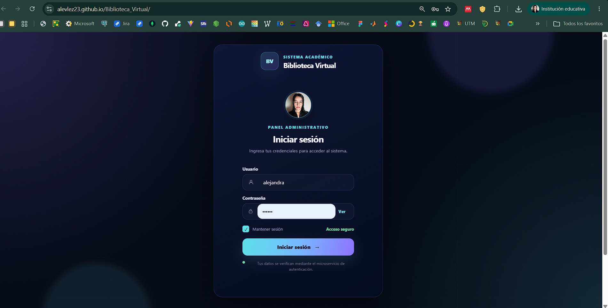

Biblioteca Virtual
Aplicación desarrollada para gestionar una biblioteca virtual mediante una estructura organizada y modular. El proyecto permite trabajar con funciones relacionadas con autenticación, libros, usuarios y préstamos, utilizando una interfaz construida con React y JavaScript. Durante su desarrollo se aplicaron conceptos de componentes reutilizables, consumo de API, organización del frontend y buenas prácticas de programación.
React
JavaScript
Vite
API
